Change analysis for Philippines for PRIMAP-hist v2.7_final compared
to v2.6.1_final
Overview over
emissions by sector and gas
The following figures show the aggregate national total emissions
excluding LULUCF AR6GWP100 for the country reported priority scenario.
The dotted linesshow the v2.6.1_final data.
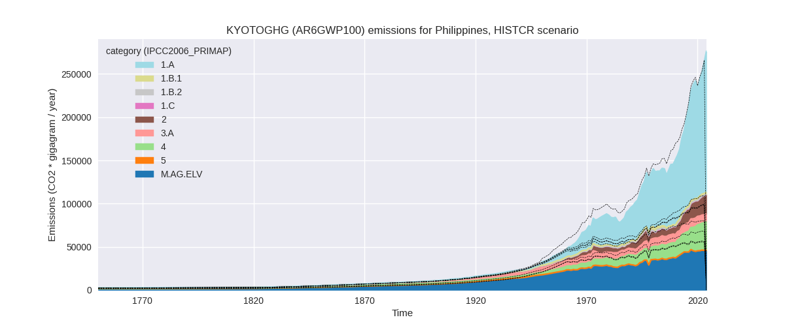
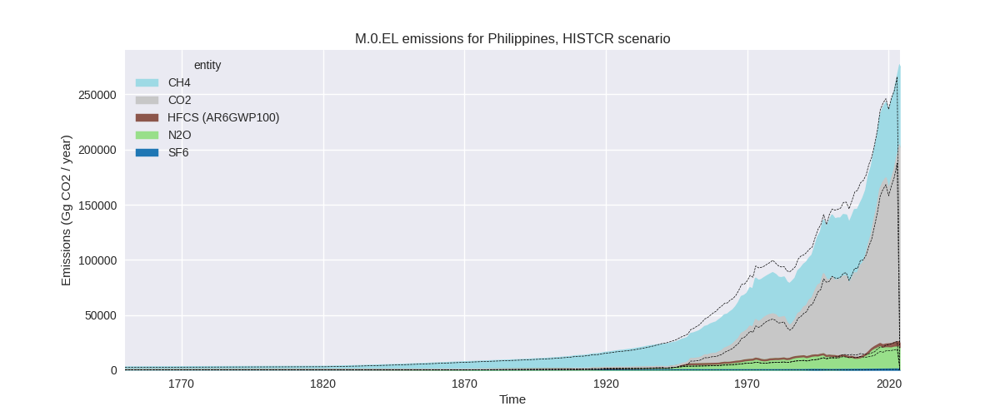
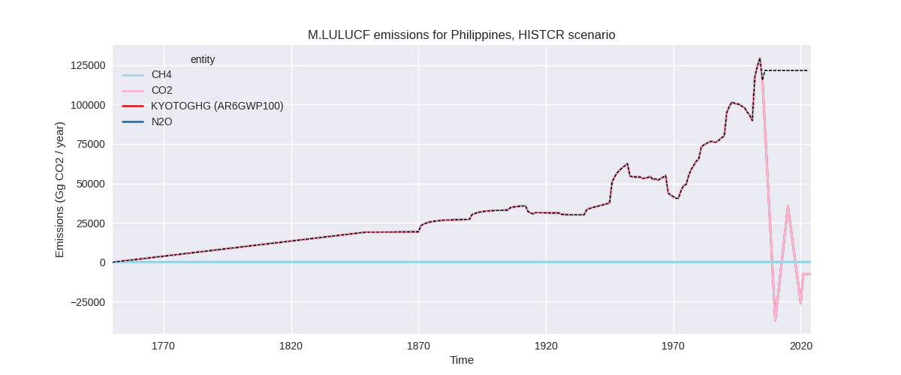
The following figures show the aggregate national total emissions
excluding LULUCF AR6GWP100 for the third party priority scenario. The
dotted linesshow the v2.6.1_final data.
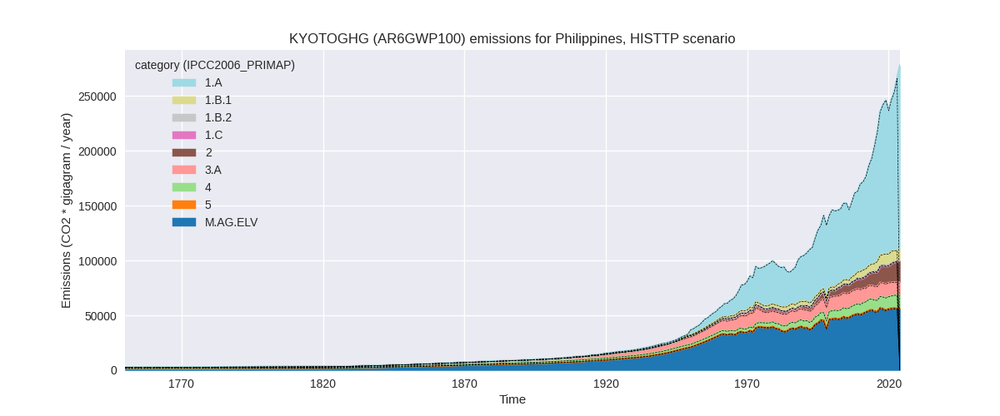
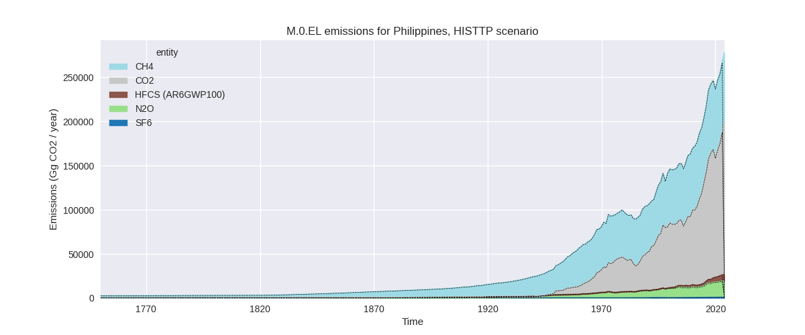
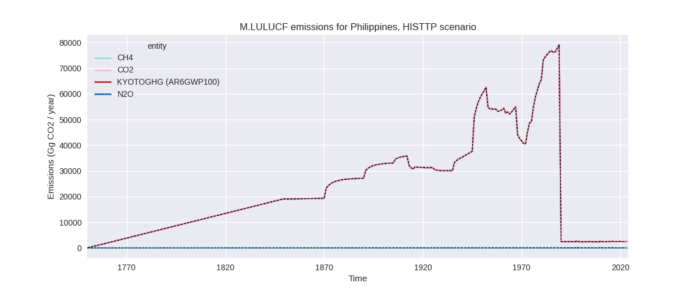
Overview over changes
In the country reported priority scenario we have the following
changes for aggregate Kyoto GHG and national total emissions excluding
LULUCF (M.0.EL):
- Emissions in 2023 have changed by -0.6%% (-1469.76 Gg CO2 / year)
- Emissions in 1990-2023 have changed by -5.0%% (-8475.59 Gg CO2 / year)
In the third party priority scenario we have the following changes
for aggregate Kyoto GHG and national total emissions excluding LULUCF
(M.0.EL):
- Emissions in 2023 have changed by 0.2%% (533.20 Gg CO2 / year)
- Emissions in 1990-2023 have changed by 0.0%% (41.77 Gg CO2 / year)
Most
important changes per scenario and time frame
In the country reported priority scenario the
following sector-gas combinations have the highest absolute impact on
national total KyotoGHG (AR6GWP100) emissions in 2023
(top 5):
- 1: 4, CH4 with 20087.44 Gg CO2 / year (195.7%)
- 2: M.AG.ELV, CH4 with -14054.52 Gg CO2 / year (-31.3%)
- 3: 1.B.1, CH4 with -7657.29 Gg CO2 / year (-76.6%)
- 4: 2, CO2 with 5913.76 Gg CO2 / year (55.0%)
- 5: M.AG.ELV, N2O with 4271.83 Gg CO2 / year (45.8%)
In the country reported priority scenario the
following sector-gas combinations have the highest absolute impact on
national total KyotoGHG (AR6GWP100) emissions in
1990-2023 (top 5):
- 1: M.AG.ELV, CH4 with -12659.04 Gg CO2 / year (-31.9%)
- 2: 4, CH4 with 10124.27 Gg CO2 / year (134.2%)
- 3: 2, CO2 with 3963.64 Gg CO2 / year (61.0%)
- 4: 3.A, CH4 with -3503.62 Gg CO2 / year (-31.8%)
- 5: 1.B.1, CH4 with -3245.00 Gg CO2 / year (-58.8%)
In the third party priority scenario the following
sector-gas combinations have the highest absolute impact on national
total KyotoGHG (AR6GWP100) emissions in 2023 (top
5):
- 1: 1.A, CO2 with 533.76 Gg CO2 / year (0.4%)
- 2: 2, CH4 with -0.56 Gg CO2 / year (-71.4%)
- 3: 1.A, CH4 with 0.00 Gg CO2 / year (0.0%)
- 4: 2, HFCS (AR6GWP100) with 0.00 Gg CO2 / year (0.0%)
- 5: M.AG.ELV, N2O with 0.00 Gg CO2 / year (0.0%)
In the third party priority scenario the following
sector-gas combinations have the highest absolute impact on national
total KyotoGHG (AR6GWP100) emissions in 1990-2023 (top
5):
- 1: 1.A, CO2 with 41.97 Gg CO2 / year (0.1%)
- 2: 2, CH4 with -0.20 Gg CO2 / year (-32.5%)
- 3: 1.A, CH4 with 0.00 Gg CO2 / year (0.0%)
- 4: 2, HFCS (AR6GWP100) with 0.00 Gg CO2 / year (0.0%)
- 5: M.AG.ELV, N2O with 0.00 Gg CO2 / year (0.0%)
Notes on data changes
Here we list notes explaining important emissions changes for the
country.
- Official country data from NICCDIES 2025 covering 1994, 2000, 2010,
2015, and 2020 allows us to use country reported data for the first
time. This introduces high changes for many sectors and gases for the CR
time-series (which was identical to TP in the last PRIMAP-hist version).
As the highest changes are not in the most important sectors and partly
cancel out the overall emissions changes are below 1% for 2023 emissions
and 5% for cumulative emissions. The NICCDIES data only resolves the
main sectors. We use PRIMAP-hist v2.6.1 HISTTP to downscale the data to
the sectoral level needed for PRIMAP-hist.
- The highest change for 2023 is in waste CH4 where country reported
data is much higher than EDGAR data and high discrepancies between
datasets are common. Waste CO2 is much lower, but generally not an
important sector. Waste N2O has smaller changes.
- For cumulative emissions a decrease in CH4 from M.AG.ELV is the most
important change.
- Further high changes are CH4 in 1.B.1, CH4 in 3.A, N2O in M.AGL.ELV,
and CO2 in IPPU.
- HFC emissions are lower in CR data than in EDGAR.
- The TP time series is unchanged except for small changes in energy
CO2 and lower CH4 from metal industry where country reported data is
used to complement EDGAR data
Changes by sector and gas
For each scenario and time frame the changes are displayed for all
individual sectors and all individual gases. In the sector plot we use
aggregate Kyoto GHGs in AR6GWP100. In the gas plot we usenational total
emissions without LULUCF.
country reported scenario
2023
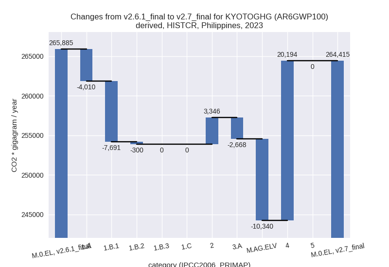
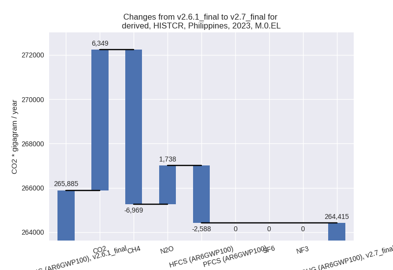
1990-2023
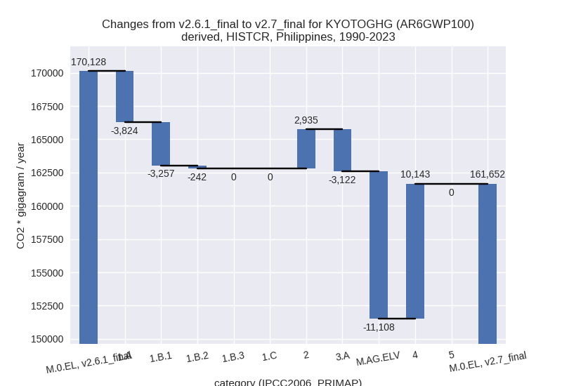
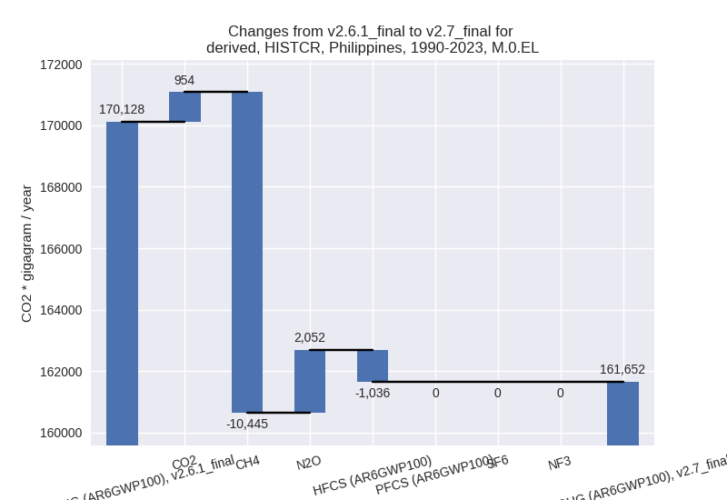
third party scenario
2023
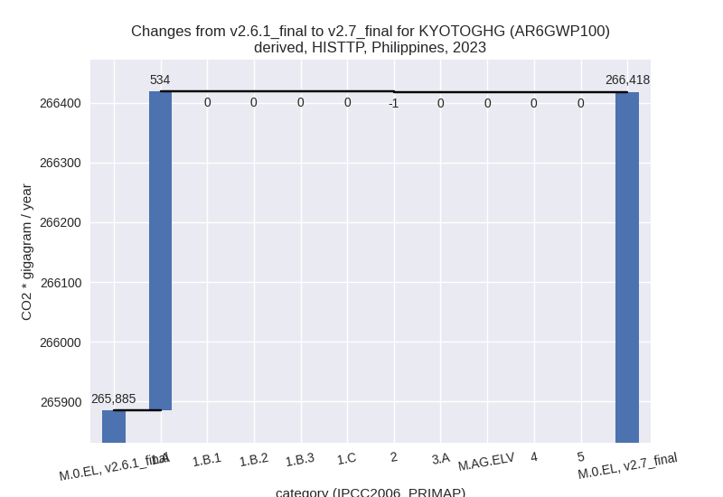
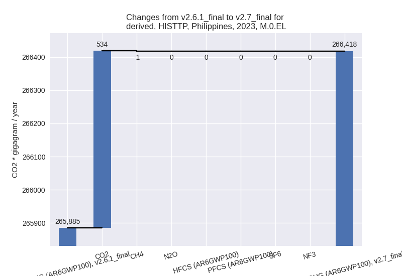
1990-2023
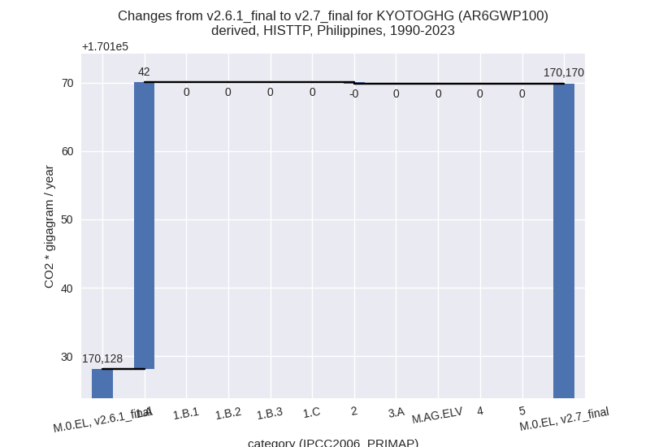
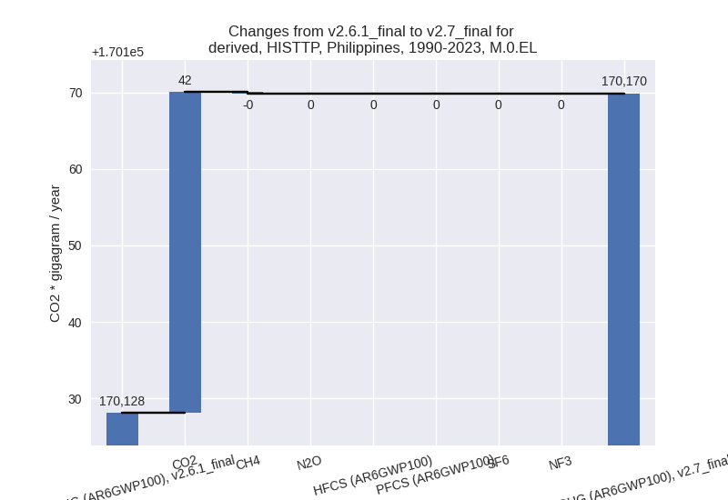
Detailed changes for the
scenarios:
country reported scenario
(HISTCR):
Most important changes
per time frame
For 2023 the following sector-gas combinations have
the highest absolute impact on national total KyotoGHG (AR6GWP100)
emissions in 2023 (top 5):
- 1: 4, CH4 with 20087.44 Gg CO2 / year (195.7%)
- 2: M.AG.ELV, CH4 with -14054.52 Gg CO2 / year (-31.3%)
- 3: 1.B.1, CH4 with -7657.29 Gg CO2 / year (-76.6%)
- 4: 2, CO2 with 5913.76 Gg CO2 / year (55.0%)
- 5: M.AG.ELV, N2O with 4271.83 Gg CO2 / year (45.8%)
For 1990-2023 the following sector-gas combinations
have the highest absolute impact on national total KyotoGHG (AR6GWP100)
emissions in 1990-2023 (top 5):
- 1: M.AG.ELV, CH4 with -12659.04 Gg CO2 / year (-31.9%)
- 2: 4, CH4 with 10124.27 Gg CO2 / year (134.2%)
- 3: 2, CO2 with 3963.64 Gg CO2 / year (61.0%)
- 4: 3.A, CH4 with -3503.62 Gg CO2 / year (-31.8%)
- 5: 1.B.1, CH4 with -3245.00 Gg CO2 / year (-58.8%)
Changes in the main sectors for aggregate KyotoGHG (AR6GWP100)
are
- 1: Total sectoral emissions in 2022 are 143665.60
Gg CO2 / year which is 57.0% of M.0.EL emissions. 2023 Emissions have
changed by -7.2% (-12001.46 Gg CO2 /
year). 1990-2023 Emissions have changed by -8.1% (-7322.76 Gg CO2 / year). For 2023
the changes per gas
are:
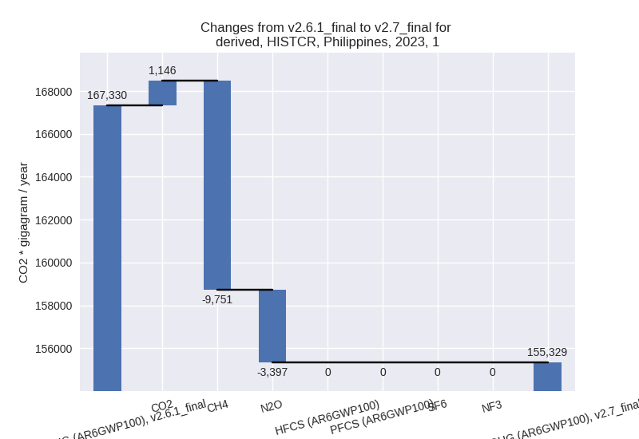
For 1990-2023 the changes per gas
are:
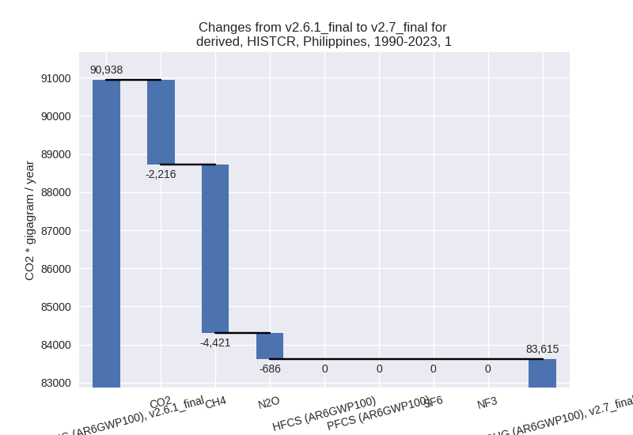
The changes come from the following subsectors:
- 1.A: Total sectoral emissions in 2022 are 140998.10
Gg CO2 / year which is 98.1% of category 1 emissions. 2023 Emissions
have changed by -2.6% (-4010.48 Gg
CO2 / year). 1990-2023 Emissions have changed by -4.5% (-3823.84 Gg CO2 / year). For 2023
the changes per gas
are:
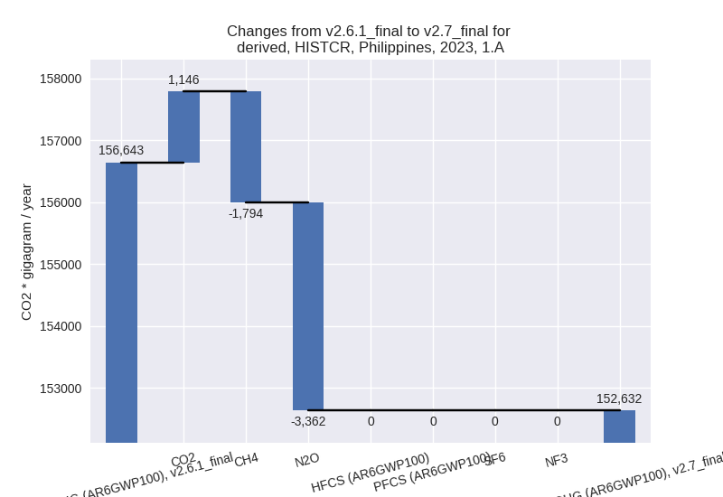
For 1990-2023 the changes per gas
are:
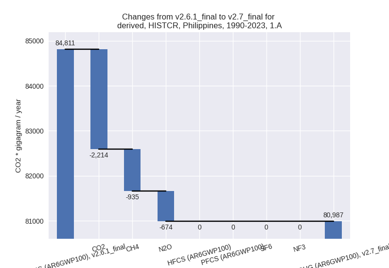
There is no subsector information available in PRIMAP-hist.
- 1.B.1: Total sectoral emissions in 2022 are 2430.10
Gg CO2 / year which is 1.7% of category 1 emissions. 2023 Emissions have
changed by -75.6% (-7690.81 Gg CO2 /
year). 1990-2023 Emissions have changed by -58.1% (-3256.88 Gg CO2 / year). For 2023
the changes per gas
are:
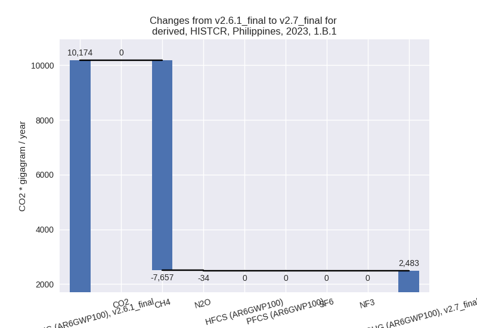
For 1990-2023 the changes per gas
are:
There is no subsector information available in PRIMAP-hist.
- 1.B.2: Total sectoral emissions in 2022 are 237.41
Gg CO2 / year which is 0.2% of category 1 emissions. 2023 Emissions have
changed by -58.4% (-300.17 Gg CO2 /
year). 1990-2023 Emissions have changed by -46.5% (-242.04 Gg CO2 / year). For 2023
the changes per gas
are:
For 1990-2023 the changes per gas
are:
There is no subsector information available in PRIMAP-hist.
- 2: Total sectoral emissions in 2022 are 21598.99 Gg
CO2 / year which is 8.6% of M.0.EL emissions. 2023 Emissions have
changed by 17.9% (3345.81 Gg CO2 /
year). 1990-2023 Emissions have changed by 31.6% (2935.11 Gg CO2 / year). For 2023
the changes per gas
are:
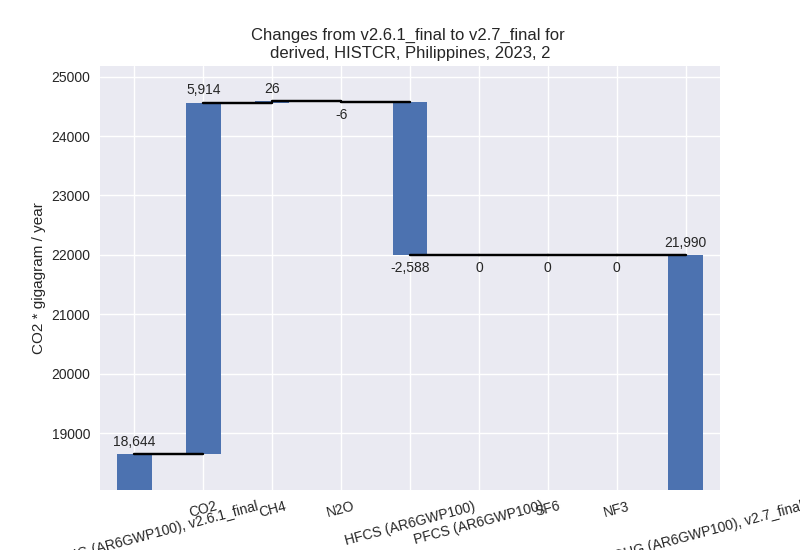
For 1990-2023 the changes per gas
are:
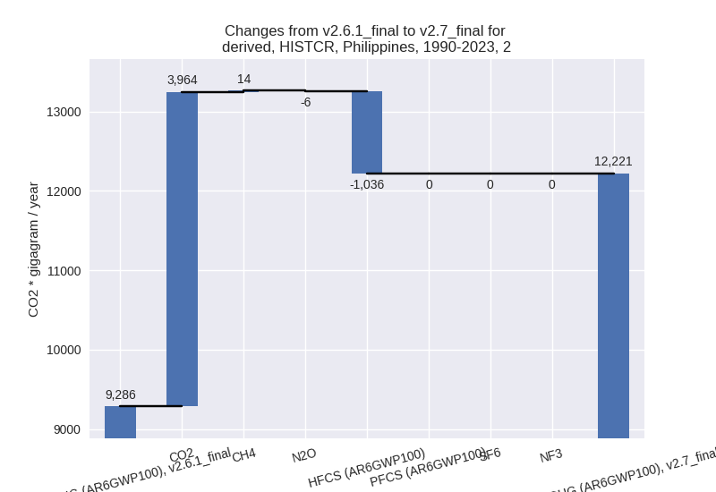
- M.AG: Total sectoral emissions in 2022 are 54518.68
Gg CO2 / year which is 21.6% of M.0.EL emissions. 2023 Emissions have
changed by -19.4% (-13007.81 Gg CO2
/ year). 1990-2023 Emissions have changed by -23.5% (-14230.54 Gg CO2 / year). For 2023
the changes per gas
are:
For 1990-2023 the changes per gas
are:
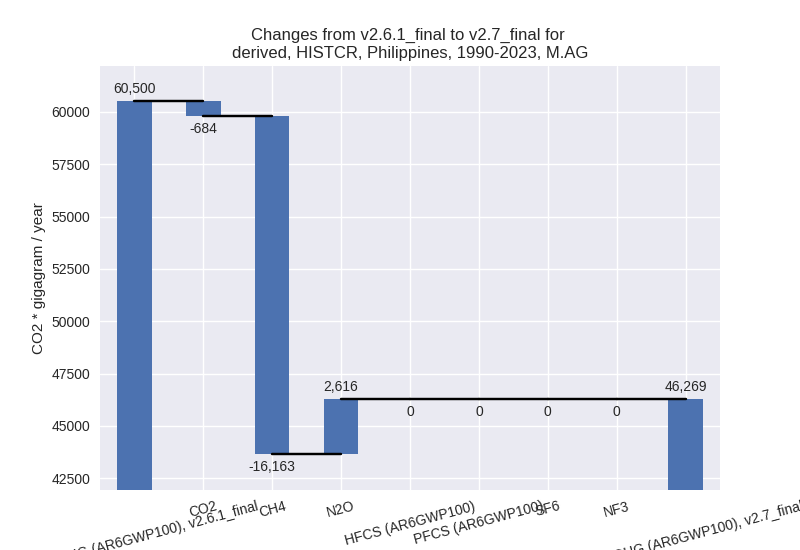
The changes come from the following subsectors:
- 3.A: Total sectoral emissions in 2022 are 9191.56
Gg CO2 / year which is 16.9% of category M.AG emissions. 2023 Emissions
have changed by -22.5% (-2667.67 Gg
CO2 / year). 1990-2023 Emissions have changed by -25.3% (-3122.11 Gg CO2 / year). For 2023
the changes per gas
are:
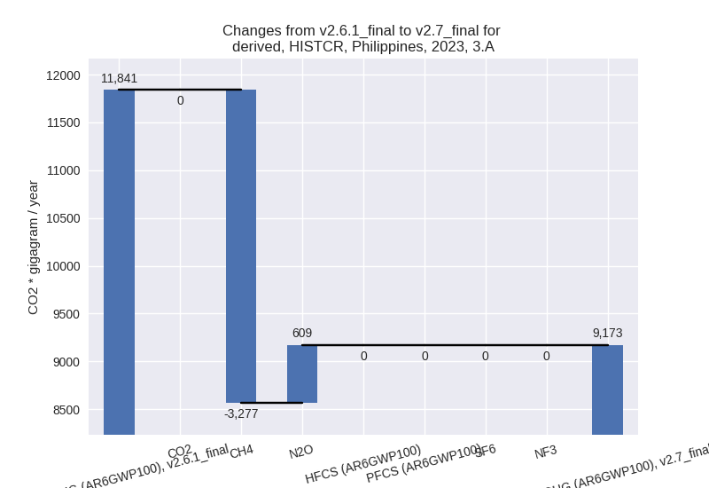
For 1990-2023 the changes per gas
are:
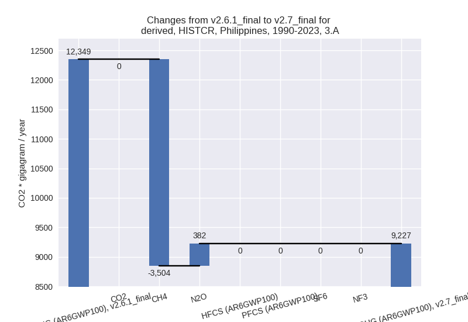
There is no subsector information available in PRIMAP-hist.
- M.AG.ELV: Total sectoral emissions in 2022 are
45327.12 Gg CO2 / year which is 83.1% of category M.AG emissions. 2023
Emissions have changed by -18.7%
(-10340.14 Gg CO2 / year). 1990-2023 Emissions have changed by -23.1% (-11108.43 Gg CO2 / year). For 2023
the changes per gas
are:
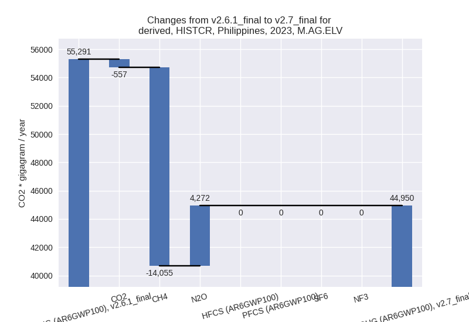
For 1990-2023 the changes per gas
are:
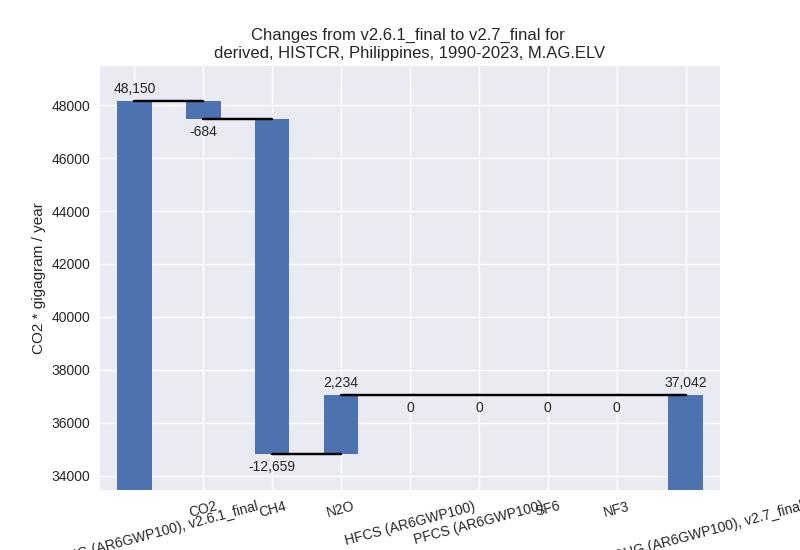
There is no subsector information available in PRIMAP-hist.
- 4: Total sectoral emissions in 2022 are 31314.08 Gg
CO2 / year which is 12.4% of M.0.EL emissions. 2023 Emissions have
changed by 171.1% (20193.71 Gg CO2 /
year). 1990-2023 Emissions have changed by 118.3% (10142.60 Gg CO2 / year). For 2023
the changes per gas
are:
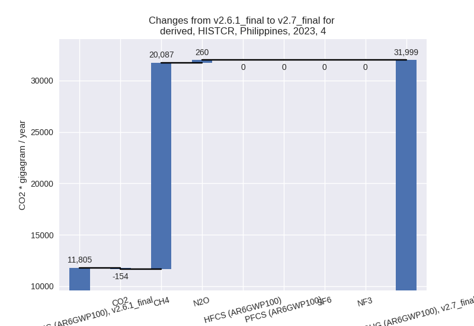
For 1990-2023 the changes per gas
are:
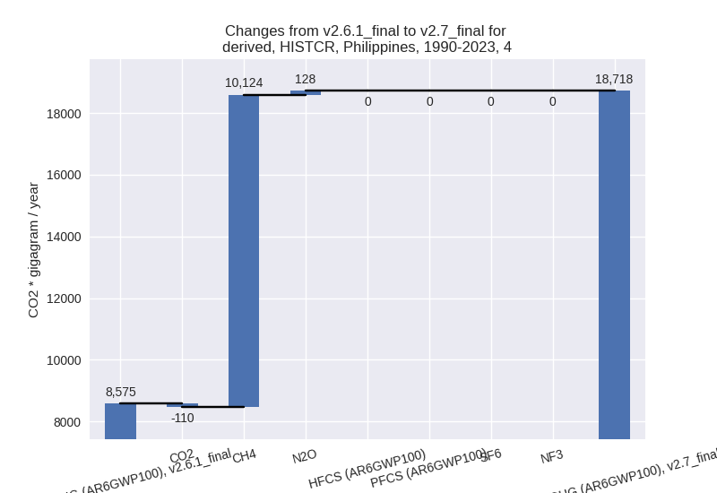
- 5: Total sectoral emissions in 2022 are 932.15 Gg
CO2 / year which is 0.4% of M.0.EL emissions. 2023 Emissions have
changed by 0.0% (0.00 Gg CO2 /
year). 1990-2023 Emissions have changed by 0.0% (0.00 Gg CO2 / year).
third party scenario (HISTTP):
Most important changes
per time frame
For 2023 the following sector-gas combinations have
the highest absolute impact on national total KyotoGHG (AR6GWP100)
emissions in 2023 (top 5):
- 1: 1.A, CO2 with 533.76 Gg CO2 / year (0.4%)
- 2: 2, CH4 with -0.56 Gg CO2 / year (-71.4%)
- 3: 1.A, CH4 with 0.00 Gg CO2 / year (0.0%)
- 4: 2, HFCS (AR6GWP100) with 0.00 Gg CO2 / year (0.0%)
- 5: M.AG.ELV, N2O with 0.00 Gg CO2 / year (0.0%)
For 1990-2023 the following sector-gas combinations
have the highest absolute impact on national total KyotoGHG (AR6GWP100)
emissions in 1990-2023 (top 5):
- 1: 1.A, CO2 with 41.97 Gg CO2 / year (0.1%)
- 2: 2, CH4 with -0.20 Gg CO2 / year (-32.5%)
- 3: 1.A, CH4 with 0.00 Gg CO2 / year (0.0%)
- 4: 2, HFCS (AR6GWP100) with 0.00 Gg CO2 / year (0.0%)
- 5: M.AG.ELV, N2O with 0.00 Gg CO2 / year (0.0%)
Changes in the main sectors for aggregate KyotoGHG (AR6GWP100)
are
- 1: Total sectoral emissions in 2022 are 155813.93
Gg CO2 / year which is 61.3% of M.0.EL emissions. 2023 Emissions have
changed by 0.3% (533.76 Gg CO2 /
year). 1990-2023 Emissions have changed by 0.0% (41.97 Gg CO2 / year).
- 2: Total sectoral emissions in 2022 are 18089.47 Gg
CO2 / year which is 7.1% of M.0.EL emissions. 2023 Emissions have
changed by -0.0% (-0.56 Gg CO2 /
year). 1990-2023 Emissions have changed by -0.0% (-0.20 Gg CO2 / year).
- M.AG: Total sectoral emissions in 2022 are 67679.66
Gg CO2 / year which is 26.6% of M.0.EL emissions. 2023 Emissions have
changed by 0.0% (0.00 Gg CO2 /
year). 1990-2023 Emissions have changed by 0.0% (0.00 Gg CO2 / year).
- 4: Total sectoral emissions in 2022 are 11547.04 Gg
CO2 / year which is 4.5% of M.0.EL emissions. 2023 Emissions have
changed by 0.0% (0.00 Gg CO2 /
year). 1990-2023 Emissions have changed by 0.0% (0.00 Gg CO2 / year).
- 5: Total sectoral emissions in 2022 are 932.15 Gg
CO2 / year which is 0.4% of M.0.EL emissions. 2023 Emissions have
changed by 0.0% (0.00 Gg CO2 /
year). 1990-2023 Emissions have changed by 0.0% (0.00 Gg CO2 / year).